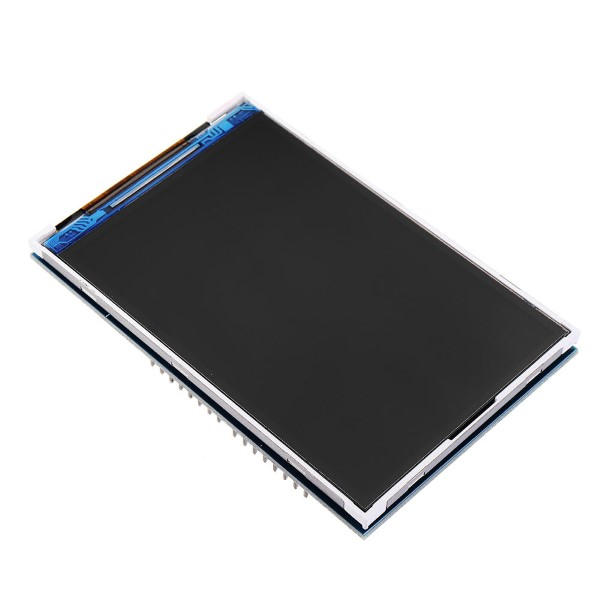
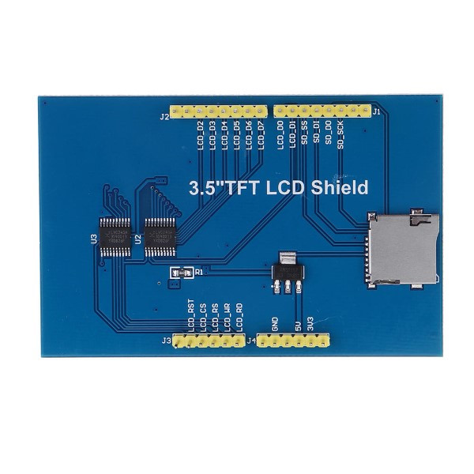

|
Power Monitor 1.2.0
Power Consumption Monitor
|
|
Power Monitor 1.2.0
Power Consumption Monitor
|
The 3,5'' TFT LCD shield is a display with 262.000 colours, 480x320 pixels of resolution and touchscreen.
Key features are listed below:
 
AgroTechLab (Laboratório de Desenvolvimento de Tecnologias para o Agronegócio)
IFSC (Instituto Federal de Santa Catarina) - Câmpus Lages
Rua Heitor Vila Lobos, 225 - São Francisco
Lages/SC - Brazil
CEP: 88.506-400